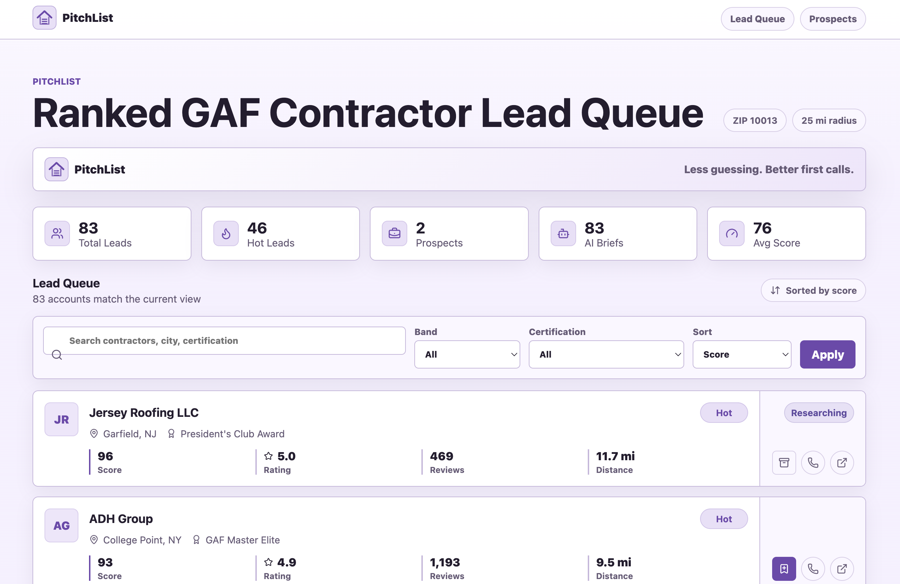
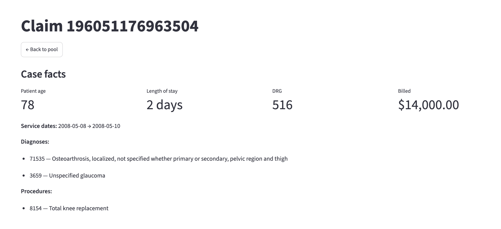
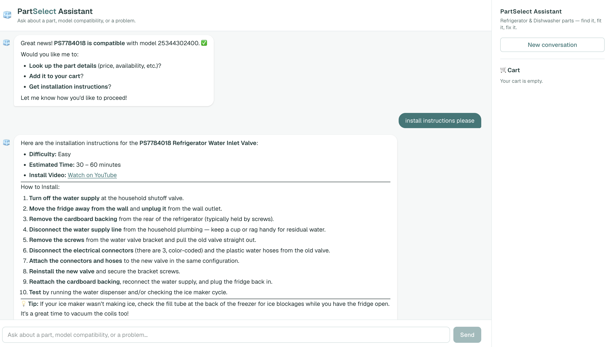
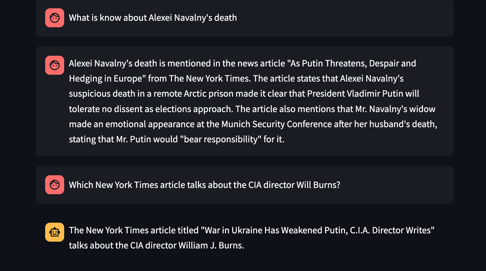
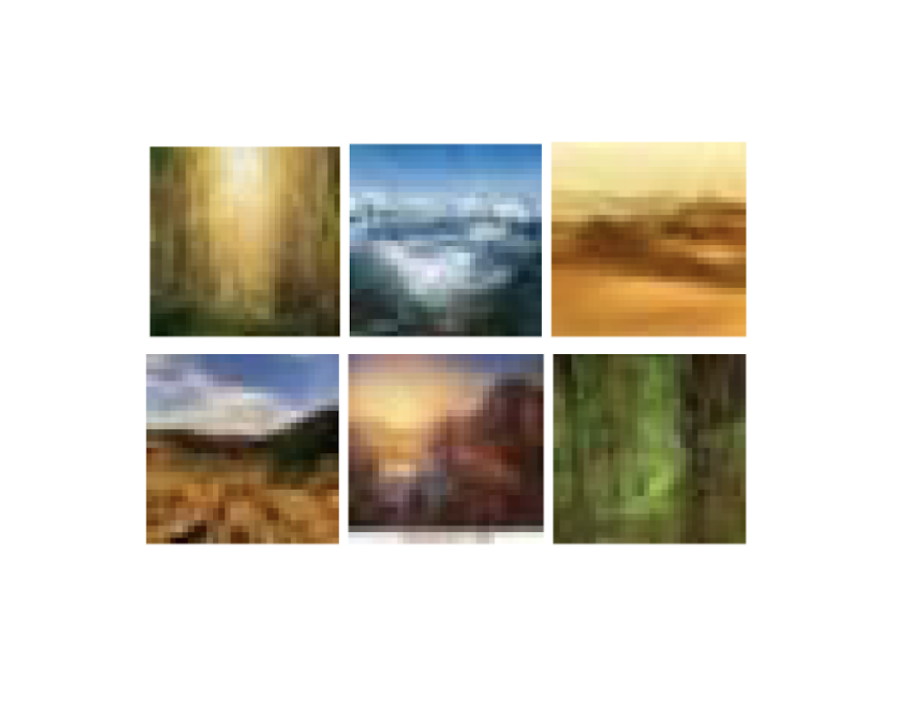
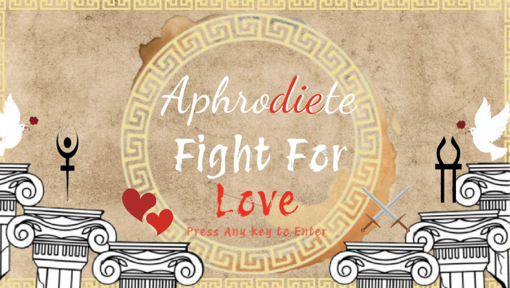
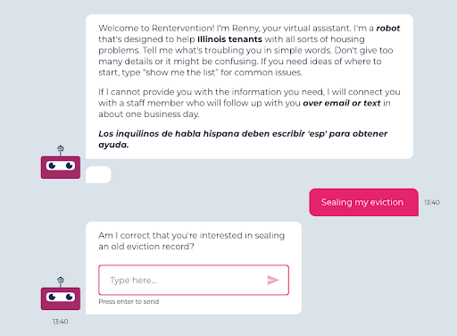
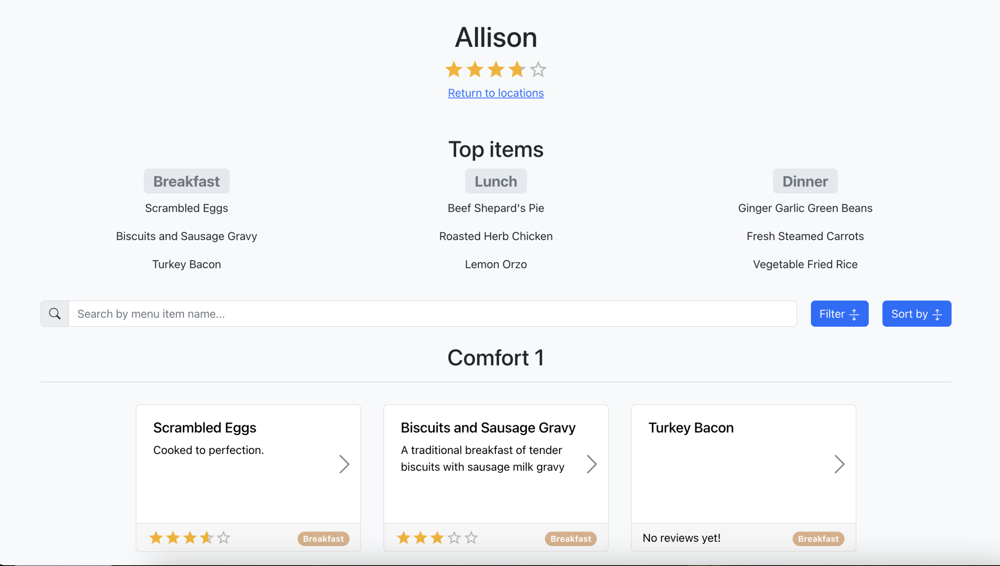

Northwestern University, McCormick School of Engineering
Graduated June 2025B.S. in Computer Science, Mathematics Minor — GPA 3.89/4.00
Agentic Systems Engineer
Computer scientist and engineer working at the intersection of markets and machine learning. I design and build LLM-powered systems — retrieval, tool-use, multi-step orchestration — alongside a broader body of ML and software engineering work.
I'm a Northwestern CS graduate (Math minor) currently working as an Equity Derivatives Trader at WallachBeth Capital, where I build the Python automation that parses, validates, and routes trade confirmations across internal and external systems.
A lot of my personal projects center on agentic systems engineering — designing LLM agents that plan, call tools, recover from failure, and hold up in production, not just in a demo. Across my projects I try to pair deep technical build work with practical, real-world problem-solving.
Recent end-to-end systems I've designed and shipped.

Live appAI sales-intelligence platform for roofing distributor reps
A sales-intelligence dashboard that scrapes and ranks GAF roofing contractors into a prioritized lead queue with AI-written briefs, plus a shared prospect pipeline reps can work and export.

Vertical AI agent for Medicare inpatient claims review
Automates the first pass on Medicare claims: enriches each claim, runs deterministic anomaly checks, gets an LLM approve / deny / escalate decision, drafts the response letter, and routes it to a human reviewer.

Scoped, tool-using chat agent for appliance-parts support
A support agent for PartSelect refrigerator & dishwasher parts — it answers part lookups, model-compatibility checks, and repair questions by calling deterministic tools over a scraped catalog, and refuses out-of-scope requests.
curl_cffi Chrome impersonation.Selected technical work.

Retrieval-Augmented Generation chatbot for journalistic research. Scraped and indexed 1,000+ user-defined articles via the Google News API, stored embeddings in Chroma, and served responses through the OpenAI API with a Streamlit front end.
Led a 7-person team building a telehealth app classifying 8 categories of skin cancer. Trained a ResNet-18 CNN on healthcare imaging datasets; shipped a React mobile front end with a Flask backend and Firebase image storage.

Trained a diffusion model from scratch to generate scenic landscape images — implemented the forward/reverse noising process and denoising network without relying on pretrained weights.

A multi-level adventure game themed on Greek mythology.

LLM-powered assistant using the ChatGPT API and web scraping to route tenants to the right housing resources.

Backend serving 5,000+ Northwestern students, built with MongoDB and a Selenium-based scraper for dining-hall menu data.
Built a language interpreter from scratch, implementing recursion, garbage collection, and first-class functions.
Python, TypeScript, JavaScript, C, C++, Java, SQL, C#, MATLAB
LangChain, LangGraph, OpenAI API, PyTorch, Scikit-Learn, NumPy, Pandas, HuggingFace
RAG, tool-use / function calling, multi-step orchestration, LSTMs, RNNs, CNNs, Diffusion Models
AWS (EC2, Lambda, S3), GCP, Docker, MongoDB, Firebase, React, Node.js, Flask, Streamlit
B.S. in Computer Science, Mathematics Minor — GPA 3.89/4.00
Always happy to talk about engineering, machine learning, or agent design.
siddharthsaha03@gmail.com